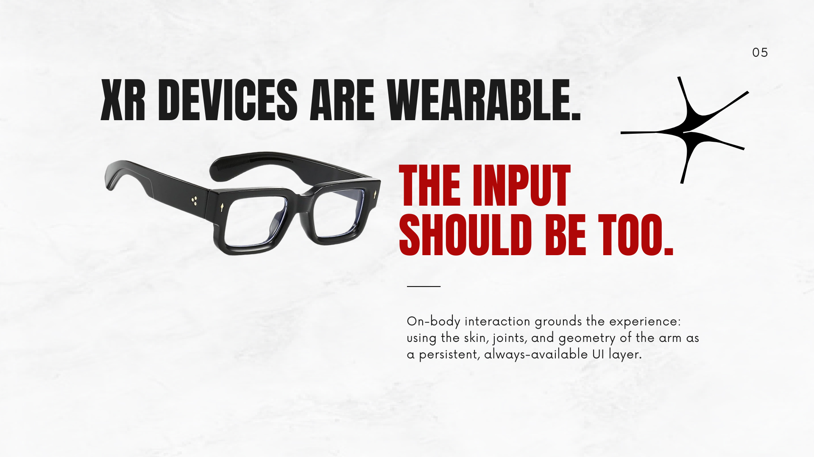
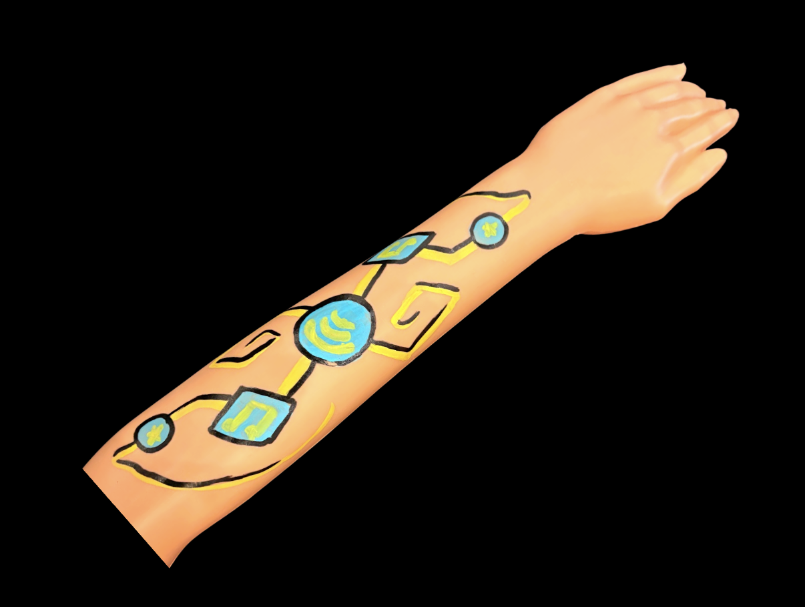
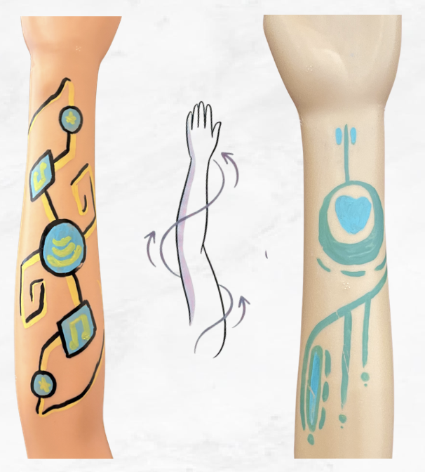
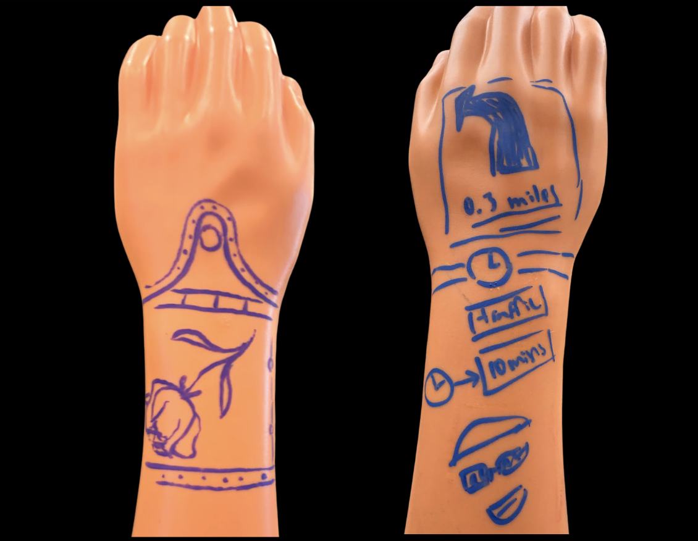
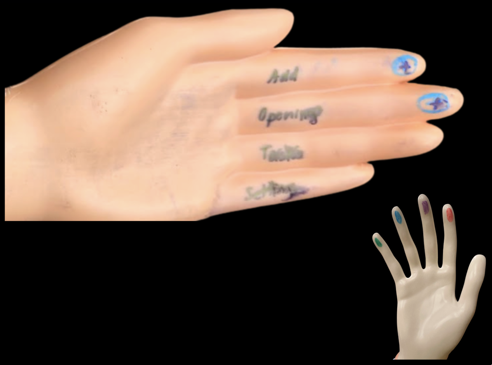

Ink & Interface
Ink & Interface explores how tattooing and body-art practices can inform the design of on-skin XR interfaces. By grounding wearable interaction in existing embodied traditions, our research uses insights from tattooing and UX designers to develop design principles for a new interface– our own arms and hands.
// understand
Current XR interactions can feel awkward and socially obtrusive, especially mid-air gestures that look strange in public. Ink & Interface asks a different question: what if we designed with the body, not just onto it?


Our work draws on tattooing and body-art traditions to develop design principles for on-skin XR interfaces, reimaging XR as projections onto the arms and hands, rather than open latent space. By grounding wearable interaction in embodied practices that already exist, we're building a framework that treats the skin as a new form of interface surface with its own rules, hierarchy, and language.
Our research question: How do body art practitioners, enthusiasts, and UX professionals make design decisions about placement, sizing, and visual design when working with the human body as a canvas, and how can this expert knowledge inform the design of on-skin XR interfaces?
Collaboration: This work sits at the intersection of HCI research and industry-facing XR design. It is my MHCI capstone, completed in collaboration with Arm.
Framing the problem: Arm Holdings creates computer chips that go in every device that connects the internet. XR is a new frontier of devices. How interaction on XR devices should look and feel is still an open question.
// research
We conducted nearly 70 interviews with tattoo artists and UX designers to understand how experts make decisions about placement, sizing, and visual design when the human body is the canvas.
We had participants draw a design of a real interface on a mannequin arm, curious to identify placement and interaction from an initial elicitation. Here’s one tattoo’s artists’ interpretation of Spotify.

One key insight from tattoo artists was the concept of body flow, where the designs follow natural curves of the arms. These curving designs, pointed toward the heart, look really different from traditional UX, which tends to be gridded and boxy.

Tattoo artists and UX designers also diverged in their ideas about placement. For example, tattooing across natural visual breakpoints like joints is uncommon– but the back of the wrist is fair game, echoing the familiar gesture of checking a watch.

Another part of our study focused on interaction. Current XR relies on big, sweeping hand gestures that look awkward to bystanders. Both designers and tattoo artists independently reimagined interaction to be literally “at your fingertips.”

// develop
From that research, we developed a set of design principles spanning placement, orientation, aesthetics, and interaction. We are now stress-testing those principles through a series of iterative XR prototypes designed specifically for on-skin use.
We are currently running 15 different experiments, testing real XR prototypes built from tattoo artist and UX designer concepts.

// status
Our work is ongoing. The next phase moves toward publication, with a study currently in development to validate the principles through structured user testing.